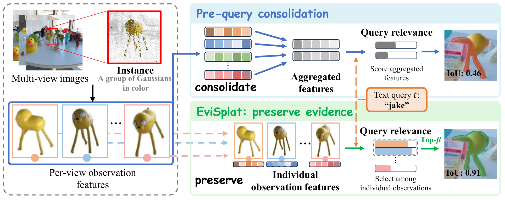
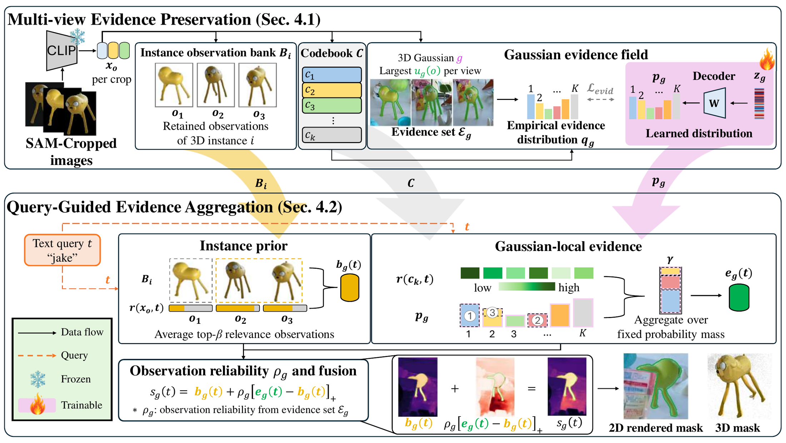
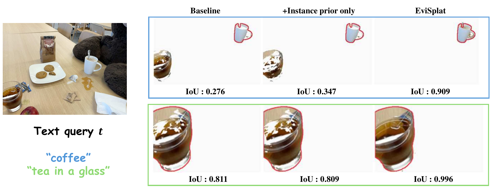
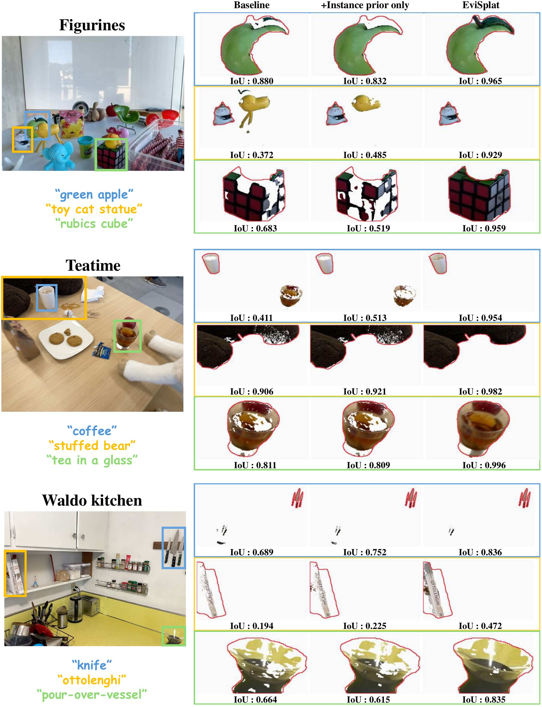
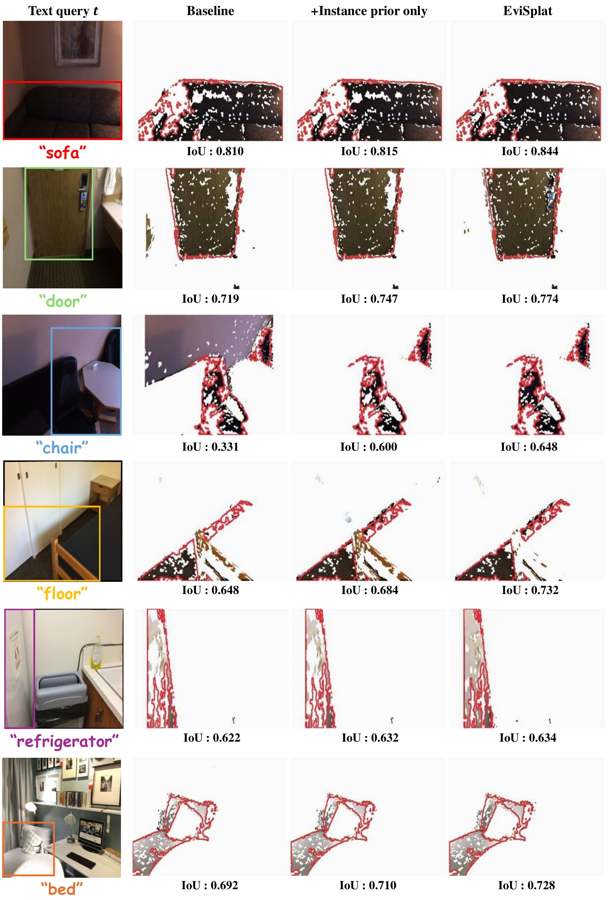

Pre-query consolidation (top) aggregates the observations of an object before the query is known. EviSplat (bottom) keeps the individual observations and selects and aggregates them according to the query. For the query “jake”, the mask IoU improves from 0.46 (LaGa) to 0.91 (EviSplat).
Open-vocabulary 3D scene understanding enables object localization and segmentation from free-form text queries without a fixed category vocabulary. Many recent methods build on 3D Gaussian Splatting and consolidate multi-view observations, such as masked crops from individual views, into language features or compact object descriptors before the query is known. However, observations of the same object vary across viewpoints and are not equally informative: some reveal cues relevant to a particular query, whereas others provide incomplete or misleading evidence. Pre-query consolidation can therefore suppress cues on which a later query depends.
We introduce EviSplat, which preserves individual observation features as evidence for later text queries. EviSplat retains individual observation features within class-agnostic 3D instances that represent objects, object parts, or background regions. It also learns, for each Gaussian, a distribution describing which visual appearances its observations support. Given a text query, EviSplat scores each instance using its most relevant observations. It then computes a score for each Gaussian by combining instance-level relevance with locally supported evidence, weighted by how often and how unambiguously that Gaussian was observed. Different queries can thus draw on different visual cues from the same preserved evidence. Experiments across diverse datasets and evaluation protocols demonstrate state-of-the-art performance, supporting the benefit of preserving multi-view evidence until query time and aggregating it according to the query.

Overview of EviSplat. Top: multi-view evidence preservation for one instance and one Gaussian. Bottom: query-guided evidence aggregation for the query “jake”. Only the Gaussian latents and decoders are trained.
The scene is grouped into class-agnostic 3D instances, which can be objects, object parts or background regions. Instead of summarizing an instance by a few descriptors, EviSplat keeps the CLIP feature of every masked observation of the instance across the training views in its observation bank, so that cues seen in only a few views remain available at query time.
Different observations of one instance support different parts and appearances. For each Gaussian, EviSplat learns a distribution over a codebook of CLIP prototypes that describes which visual appearances its observations support. The distribution is decoded from a compact per-Gaussian latent, so its storage does not grow with the number of observations.
Given a text query, each instance is scored by the mean relevance of its most relevant fraction of observations rather than a fixed summary. Each Gaussian then receives the instance score, corrected by the query-relevant evidence encoded in its own distribution. The correction is weighted by an observation reliability that reflects how often and how unambiguously the Gaussian was observed, so that well-observed Gaussians rely more on local evidence.
EviSplat achieves the highest mean mIoU and mAcc@0.25, improving the reproduced LaGa baseline from 63.6 to 70.7 mIoU (mean over three seeds).
| Method | Figurines | Teatime | Ramen | Kitchen | mIoU | mAcc@0.25 |
|---|---|---|---|---|---|---|
| Rendered feature maps | ||||||
| LERF [ICCV'23] | 38.6 | 45.0 | 28.2 | 37.9 | 37.4 | – |
| LangSplat [CVPR'24] | 44.7 | 65.1 | 51.2 | 44.5 | 51.4 | – |
| Occam's LGS [BMVC'25] | 58.6 | 70.2 | 51.0 | 65.3 | 61.3 | – |
| OpenGaFF [arXiv'26] | 64.3 | 76.1 | 53.8 | 65.8 | 65.0 | – |
| CCL-LGS [ICCV'25] | 61.2 | 71.8 | 62.3 | 67.1 | 65.6 | – |
| Gaussian-level selection | ||||||
| OpenGaussian [NeurIPS'24] | 39.3 | 60.4 | 31.0 | 22.7 | 38.4 | 51.4 |
| LightSplat [CVPR'26] | 50.6 | 59.7 | 45.1 | 35.0 | 47.6 | 68.3 |
| VALA [3DV'26] | 60.4 | 70.6 | 45.4 | 55.7 | 58.0 | 82.9 |
| LaGa [ICML'25] | 64.1 | 70.9 | 55.6 | 65.6 | 64.0 | – |
| LaGa (reproduced) | 63.4 | 67.1 | 60.8 | 62.9 | 63.6 | 81.9 |
| EviSplat (Ours) | 74.8 | 73.5 | 62.9 | 71.5 | 70.7 | 86.5 |
With the same aggregation hyper-parameters, EviSplat reaches the highest mean mIoU on 3D-OVS and improves point-level mIoU on ScanNet for 19 and 15 classes.
| 3D-OVS | mIoU |
|---|---|
| LangSplat | 93.4 |
| ReasonGrounder | 94.7 |
| Occam's LGS | 95.0 |
| LaGa | 95.3 |
| Hi-LSplat | 96.1 |
| VLGS | 97.1 |
| EviSplat (Ours) | 97.4 |
| ScanNet (mIoU / mAcc) | 19 classes | 15 classes | 10 classes |
|---|---|---|---|
| OpenGaussian | 24.7 / 41.5 | 30.1 / 48.3 | 38.3 / 55.2 |
| ReLaGS | 32.4 / 44.5 | 40.0 / 60.6 | 47.2 / 66.1 |
| LaGa | 32.5 / 49.1 | 35.5 / 53.5 | 42.6 / 63.2 |
| LUDVIG | 33.9 / 51.4 | 37.4 / 57.2 | 46.4 / 66.2 |
| LightSplat | 37.1 / 58.7 | 39.8 / 60.9 | 47.8 / 68.2 |
| OpenInsGaussian | 37.5 / 54.4 | 38.1 / 55.3 | 51.4 / 69.2 |
| EviSplat (Ours) | 40.4 / 57.9 | 44.9 / 62.9 | 50.7 / 71.0 |
Component analysis on LERF-OVS (mIoU). Selecting the most relevant observations of each instance and adding Gaussian-local evidence provide complementary gains over the LaGa baseline.

Qualitative comparison on LERF-OVS: the input view with color-coded queries, the reproduced baseline, the instance prior alone, and EviSplat.

Additional results on LERF-OVS. Red outlines mark the ground truth; values report rendered-view mask IoU.

Qualitative results on ScanNet. Values report query-specific point IoU over the full scene.
@article{moon2026evisplat,
title={EviSplat: Preserving Multi-View Evidence in 3D Gaussian Splatting for Open-Vocabulary Segmentation},
author={Moon, Sungho and Shimomura, Kota and Park, Junwoo and Choi, Wonhyeok and Lee, Seunghun and Yamashita, Takayoshi and Im, Sunghoon},
journal={arXiv preprint arXiv:2609.34853},
year={2026}
}